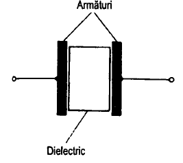
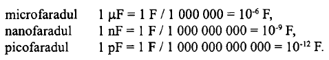

Componente electronice
Condensatorul
Un condensator constă din două suprafețe conductoare așezate față în față, despărțite de un material izolant numit dielectric. Materialele dielectrice comune sunt aerul, hârtia etc.
Încărcarea unui condensator
Proprietatea de bază a unui condensator este capacitatea sa de a stoca energie sub formă de sarcini electrice.
Capacitatea
Mărimea care arată în ce măsură un condesator poate stoaca sarcini electrice se numeste capacitate, C. Unitatea de măsură pentru capacitate este faradul, F. Faradul este o unitate de măsură foarte mare și de aceea se folosesc submultiplii.
